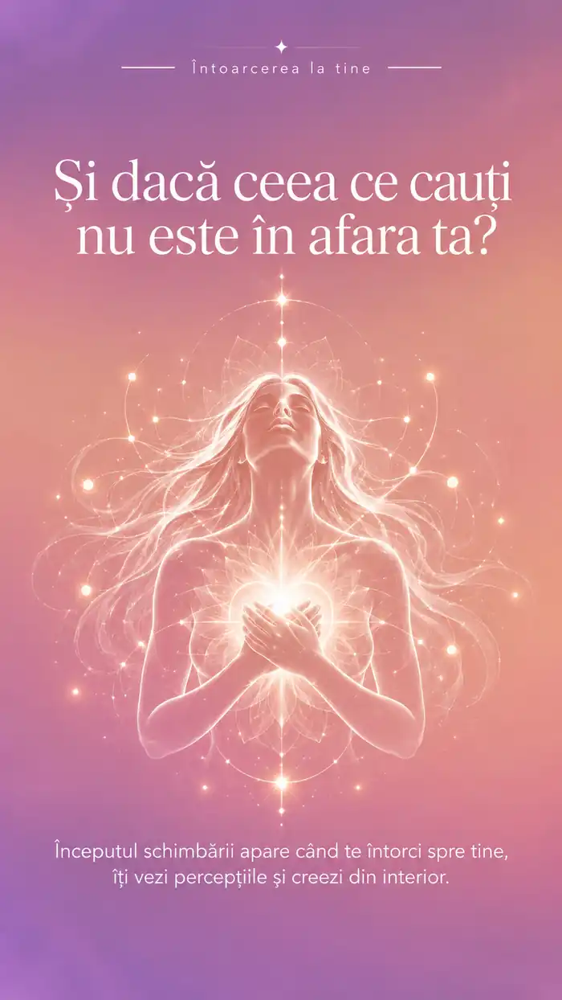
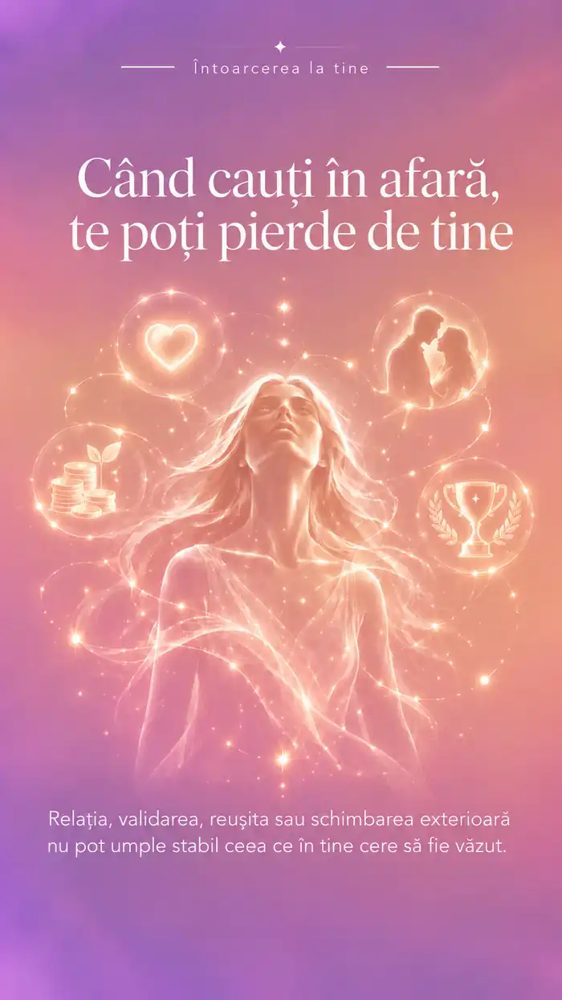
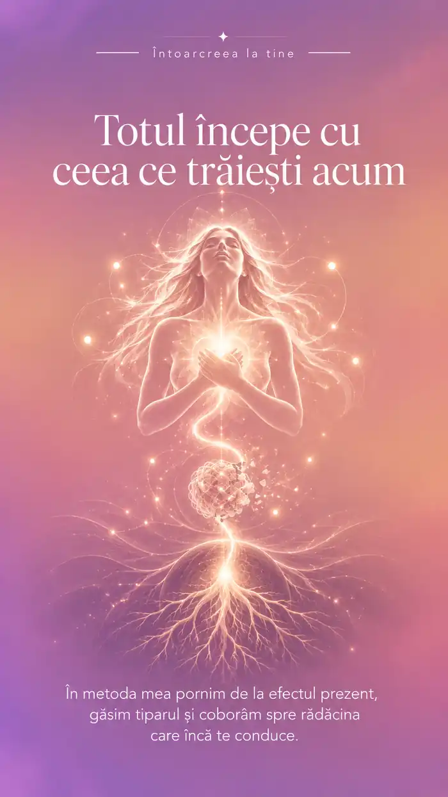
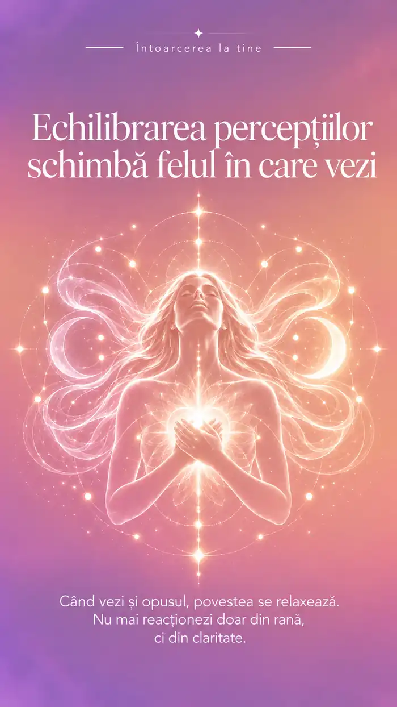
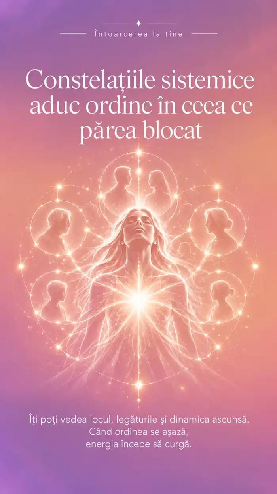
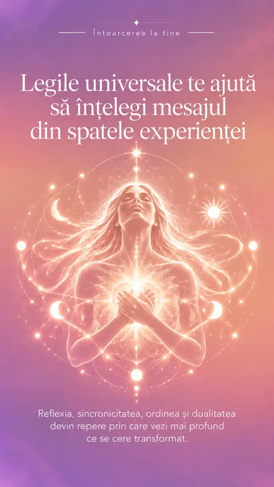
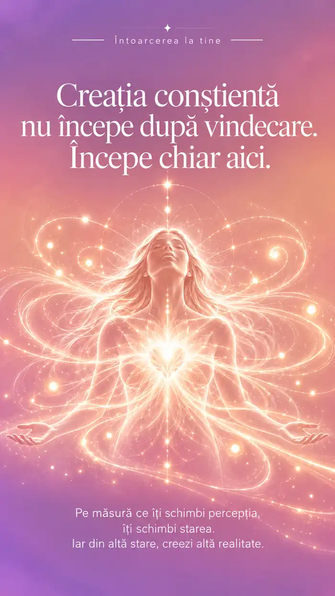

Ce trăiești acum
Pornim de la situația care te doare și clarificăm ce îți dorești să fie diferit.
ECHILIBRAREA RĂDĂCINILOR
Pornim de la ceea ce trăiești: pierdere, doliu, infidelitate, avort, respingere, vinovăție, rușine sau conflicte familiale. Explorăm situația concretă, concluziile despre sine și posibilele rădăcini, fără cauze impuse. Claritate prin echilibrarea percepțiilor; creația conștientă este prezentă de la început.
DINCOLO DE CE SE VEDE
Uneori te superi că ceilalți decid pentru tine, dar înainte să alegi le ceri aprobarea. Alteori spui că te descurci singură și te doare când nimeni nu se oferă să te ajute.
Poate îți dorești să fii apreciată, dar răspunzi „nu-i mare lucru” când primești un compliment. Sau aștepți weekendul ca să te odihnești, iar duminică seara constați că ai făcut din nou totul pentru ceilalți.
Acestea sunt manifestări posibile, nu explicații despre tine. Nu presupun că au aceeași cauză. Pornim de la o întâmplare concretă și explorăm ce s-a întâmplat, ce ai înțeles despre tine și când ai mai trăit ceva asemănător.
Prin echilibrarea percepțiilor urmărim claritatea. Nu schimbăm ceea ce s-a întâmplat și nu îți spun eu ce ar trebui să descoperi. Verificăm împreună ce se schimbă în felul în care privești situația și ce alegeri devin posibile. Creația conștientă însoțește acest proces de la început, nu este o recompensă de la final.
CUM LUCREZ · ECHILIBRAREA RĂDĂCINILOR
„Creația conștientă începe odată cu lucrul asupra percepțiilor.”
Nu trebuie să vii cu explicația pregătită. Pornim de la experiența ta, nu de la presupuneri.
Pornim de la situația care te doare și clarificăm ce îți dorești să fie diferit.
Explorăm concluzia despre tine și momentele în care te-ai mai simțit la fel, până descoperim o rădăcină concretă.
Echilibrăm acțiunea vizibilă prin întrebările legilor universale, apoi verificăm interpretarea. Creația conștientă însoțește procesul.
În metoda mea, rădăcina este interpretarea polarizată pe care ai dat-o unui moment din viața ta.
Nu presupun cauza și nu schimbăm faptele trecutului. Dacă apare frica, o explorăm în contextul poveștii tale.
Constelațiile sistemice pot fi folosite, în funcție de context, pentru explorarea rădăcinii.
Nu sunt etape rigide. Lucrăm în funcție de situația ta. Vezi cum folosesc cele șapte legi universale →
ÎNTREBĂRILE DE ECHILIBRARE VIN DIN LEGI
În această abordare, dualitatea, reflexia și sincronicitatea sunt reperele folosite în echilibrarea percepțiilor. Alte legi sunt prezentate separat, ca perspective de reflecție, nu ca instrumente suplimentare ale metodei.
Explorăm opusul unei percepții puternice: dacă ai văzut doar pierderea, ce altceva a existat în aceeași experiență? Căutăm răspunsuri concrete, nu optimism forțat.
Lucrăm cu trăsăturile pe care le admiri sau le judeci la ceilalți. Le traducem în comportamente observabile și explorăm unde le poți recunoaște și la tine.
Când ai trăit o provocare, explorăm ce formă de sprijin a coexistat cu ea, pe aceeași temă și în același moment, fără să negăm durerea trăită.
În situațiile percepute ca pierderi, explorăm ce s-a schimbat, ce a rămas și ce poate căpăta o altă formă în raport cu valorile tale.
Observăm dacă un mod de a reacționa sau un tipar apare în mai multe domenii ale vieții: relații, muncă, bani sau alegeri.
Clarificăm prioritățile și valorile după care îți organizezi timpul, energia și deciziile. Explorăm ce este cu adevărat important pentru tine.
Explorăm obiectivele foarte încărcate emoțional și tensiunea creată de dorința de a obține sau evita ceva. După echilibrare, verificăm dacă dorința este aceeași.
Descoperă ghidul complet al celor 7 legi universale și câte un articol practic pentru fiecare →
Poate spui „da” când ai vrea să refuzi. Sau îți amâni planurile pentru că te temi să nu dezamăgești. În timp, se pot aduna oboseala, nemulțumirea și sentimentul că alegerile tale rămân mereu pe ultimul loc.
Uneori, în spatele acestor reacții există convingeri precum „Dacă spun nu, rănesc pe cineva” sau „Dacă aleg pentru mine, sunt egoistă”. Alteori, povestea este diferită. Important este să verifici ce recunoști în propria experiență.
Echilibrarea rădăcinilor îți propune să privești experiențele și percepțiile din mai multe perspective, cu ajutorul legilor universale și al constelațiilor sistemice. Claritate prin echilibrarea percepțiilor.
DESCOPERĂ METODA
Parcurge imaginile în ritmul tău. Pe telefon, glisează pentru a le vedea pe toate.






